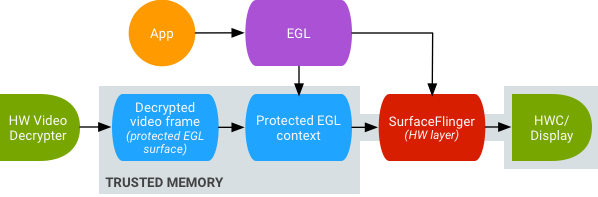

In this document
The SurfaceTexture class was introduced in Android 3.0. Just as SurfaceView is the combination of a Surface and a View, SurfaceTexture is a rough combination of a Surface and a GLES texture (with a few caveats).
When you create a SurfaceTexture, you are creating a BufferQueue for which
your app is the consumer. When a new buffer is queued by the producer, your app
is notified via callback (onFrameAvailable()). Your app calls
updateTexImage(), which releases the previously-held buffer,
acquires the new buffer from the queue, and makes some EGL calls to make the
buffer available to GLES as an external texture.
External textures
External textures (GL_TEXTURE_EXTERNAL_OES) are not quite the
same as textures created by GLES (GL_TEXTURE_2D): You have to
configure your renderer a bit differently, and there are things you can't do
with them. The key point is that you can render textured polygons directly
from the data received by your BufferQueue. gralloc supports a wide variety of
formats, so we need to guarantee the format of the data in the buffer is
something GLES can recognize. To do so, when SurfaceTexture creates the
BufferQueue, it sets the consumer usage flags to
GRALLOC_USAGE_HW_TEXTURE, ensuring that any buffer created by
gralloc would be usable by GLES.
Because SurfaceTexture interacts with an EGL context, you must be careful to call its methods from the correct thread (as detailed in the class documentation).
Timestamps and transformations
If you look deeper into the class documentation, you will see a couple of odd
calls. One call retrieves a timestamp, the other a transformation matrix, the
value of each having been set by the previous call to
updateTexImage(). It turns out that BufferQueue passes more than
just a buffer handle to the consumer. Each buffer is accompanied by a timestamp
and transformation parameters.
The transformation is provided for efficiency. In some cases, the source data might be in the incorrect orientation for the consumer; but instead of rotating the data before sending it, we can send the data in its current orientation with a transform that corrects it. The transformation matrix can be merged with other transformations at the point the data is used, minimizing overhead.
The timestamp is useful for certain buffer sources. For example, suppose you
connect the producer interface to the output of the camera (with
setPreviewTexture()). To create a video, you need to set the
presentation timestamp for each frame; but you want to base that on the time
when the frame was captured, not the time when the buffer was received by your
app. The timestamp provided with the buffer is set by the camera code, resulting
in a more consistent series of timestamps.
SurfaceTexture and Surface
If you look closely at the API you'll see the only way for an application to create a plain Surface is through a constructor that takes a SurfaceTexture as the sole argument. (Prior to API 11, there was no public constructor for Surface at all.) This might seem a bit backward if you view SurfaceTexture as a combination of a Surface and a texture.
Under the hood, SurfaceTexture is called GLConsumer, which more accurately reflects its role as the owner and consumer of a BufferQueue. When you create a Surface from a SurfaceTexture, what you're doing is creating an object that represents the producer side of the SurfaceTexture's BufferQueue.
Case Study: Grafika's continuous capture
The camera can provide a stream of frames suitable for recording as a movie.
To display it on screen, you create a SurfaceView, pass the Surface to
setPreviewDisplay(), and let the producer (camera) and consumer
(SurfaceFlinger) do all the work. To record the video, you create a Surface with
MediaCodec's createInputSurface(), pass that to the camera, and
again sit back and relax. To show and record the it at the same time, you have
to get more involved.
The continuous capture activity displays video from the camera as the video is being recorded. In this case, encoded video is written to a circular buffer in memory that can be saved to disk at any time. It's straightforward to implement so long as you keep track of where everything is.
This flow involves three BufferQueues: one created by the app, one created by SurfaceFlinger, and one created by mediaserver:
- Application. The app uses a SurfaceTexture to receive frames from Camera, converting them to an external GLES texture.
- SurfaceFlinger. The app declares a SurfaceView, which we use to display the frames.
- MediaServer. You configure a MediaCodec encoder with an input Surface to create the video.
Figure 1.Grafika's continuous capture activity. Arrows indicate data propagation from the camera and BufferQueues are in color (producers are teal, consumers are green).
Encoded H.264 video goes to a circular buffer in RAM in the app process, and is written to an MP4 file on disk using the MediaMuxer class when the capture button is hit.
All three of the BufferQueues are handled with a single EGL context in the app, and the GLES operations are performed on the UI thread. Doing the SurfaceView rendering on the UI thread is generally discouraged, but since we're doing simple operations that are handled asynchronously by the GLES driver we should be fine. (If the video encoder locks up and we block trying to dequeue a buffer, the app will become unresponsive. But at that point, we're probably failing anyway.) The handling of the encoded data -- managing the circular buffer and writing it to disk -- is performed on a separate thread.
The bulk of the configuration happens in the SurfaceView's surfaceCreated()
callback. The EGLContext is created, and EGLSurfaces are created for the
display and for the video encoder. When a new frame arrives, we tell
SurfaceTexture to acquire it and make it available as a GLES texture, then
render it with GLES commands on each EGLSurface (forwarding the transform and
timestamp from SurfaceTexture). The encoder thread pulls the encoded output
from MediaCodec and stashes it in memory.
Secure texture video playback
Android 7.0 supports GPU post-processing of protected video content. This allows using the GPU for complex non-linear video effects (such as warps), mapping protected video content onto textures for use in general graphics scenes (e.g., using OpenGL ES), and virtual reality (VR).
Figure 2.Secure texture video playback
Support is enabled using the following two extensions:
- EGL extension
(
EGL_EXT_protected_content). Allows the creation of protected GL contexts and surfaces, which can both operate on protected content. - GLES extension
(
GL_EXT_protected_textures). Allows tagging textures as protected so they can be used as framebuffer texture attachments.
Android 7.0 also updates SurfaceTexture and ACodec
(libstagefright.so) to allow protected content to be sent even if
the windows surface does not queue to the window composer (i.e., SurfaceFlinger)
and provide a protected video surface for use within a protected context. This
is done by setting the correct protected consumer bits
(GRALLOC_USAGE_PROTECTED) on surfaces created in a protected
context (verified by ACodec).
These changes benefit app developers who can create apps that perform enhanced video effects or apply video textures using protected content in GL (for example, in VR), end users who can view high-value video content (such as movies and TV shows) in GL environment (for example, in VR), and OEMs who can achieve higher sales due to added device functionality (for example, watching HD movies in VR). The new EGL and GLES extensions can be used by system on chip (SoCs) providers and other vendors, and are currently implemented on the Qualcomm MSM8994 SoC chipset used in the Nexus 6P.
Secure texture video playback sets the foundation for strong DRM implementation in the OpenGL ES environment. Without a strong DRM implementation such as Widevine Level 1, many content providers would not allow rendering of their high-value content in the OpenGL ES environment, preventing important VR use cases such as watching DRM protected content in VR.
AOSP includes framework code for secure texture video playback; driver
support is up to the vendor. Partners must implement the
EGL_EXT_protected_content and
GL_EXT_protected_textures extensions. When using your own codec
library (to replace libstagefright), note the changes in
/frameworks/av/media/libstagefright/SurfaceUtils.cpp that allow
buffers marked with GRALLOC_USAGE_PROTECTED to be sent to
ANativeWindows (even if the ANativeWindow does not queue directly to the window
composer) as long as the consumer usage bits contain
GRALLOC_USAGE_PROTECTED. For detailed documentation on implementing
the extensions, refer to the Khronos Registry
(EGL_EXT_protected_content,
GL_EXT_protected_textures).
Partners may also need to make hardware changes to ensure that protected memory mapped onto the GPU remains protected and unreadable by unprotected code.